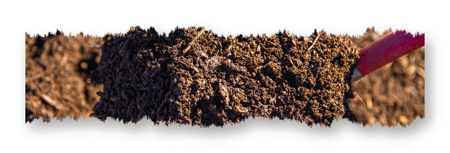
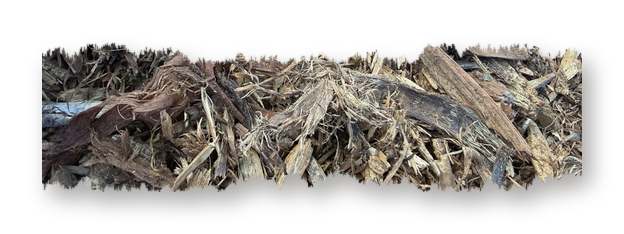
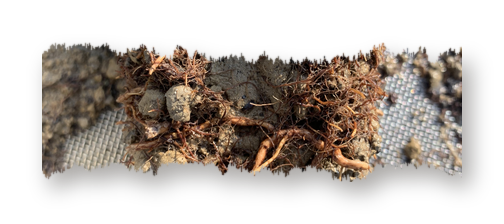
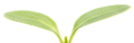
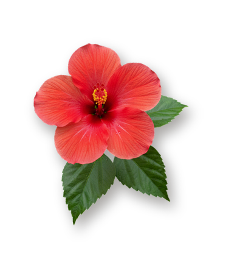
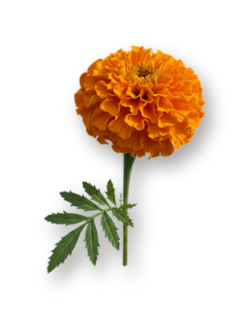
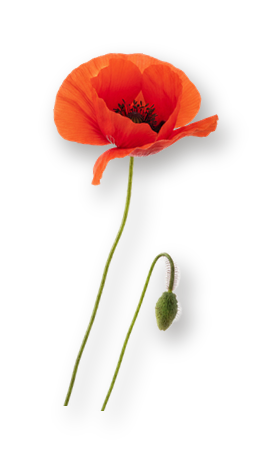
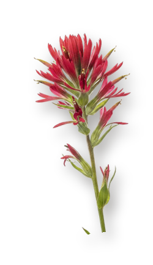
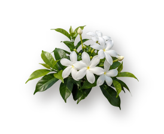
Today we turn 1 🎂
One year as a 501(c)(3) nonprofit.
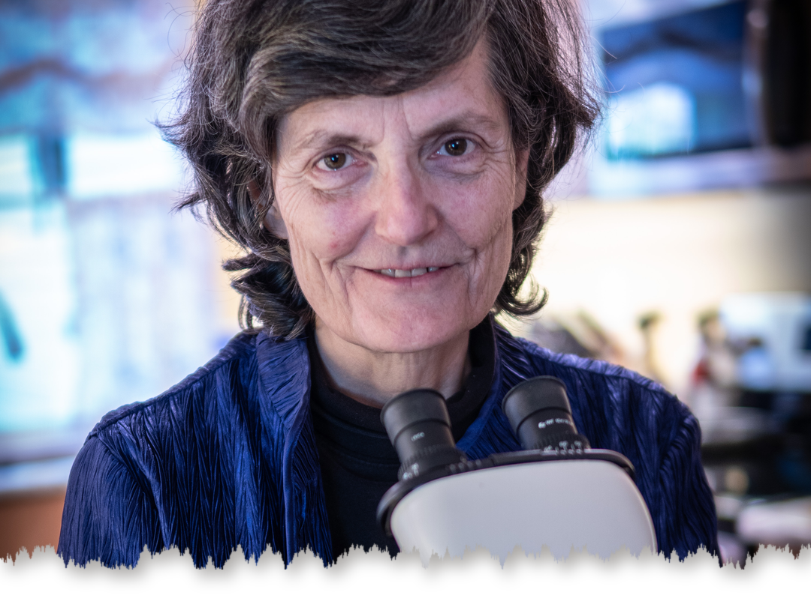
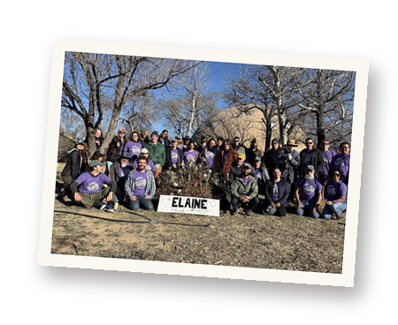
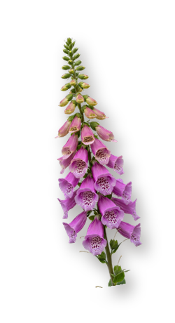
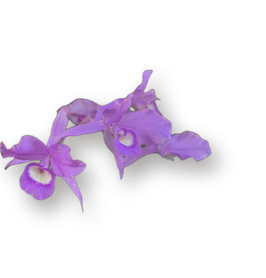
A year ago, we became a nonprofit foundation to carry Dr. Elaine Ingham's work to everyone who wants to learn it.
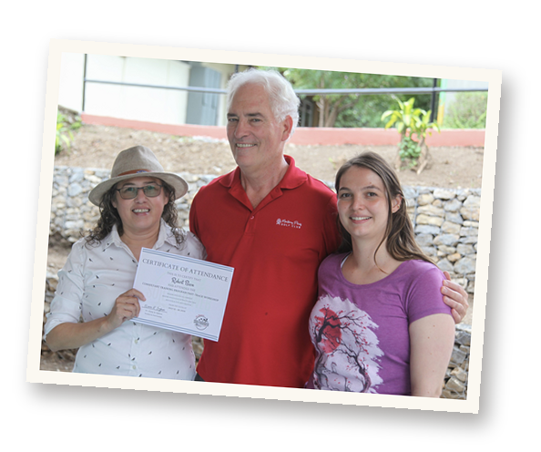
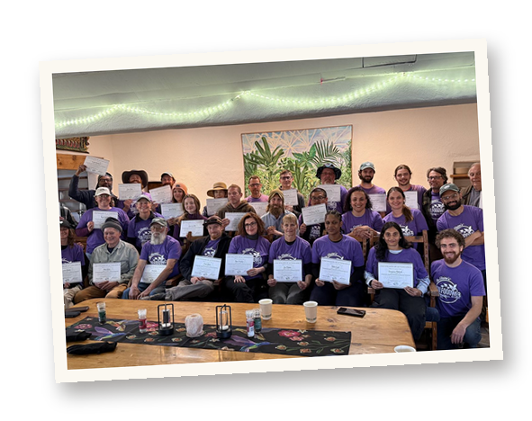
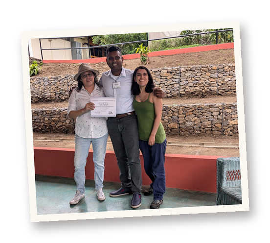
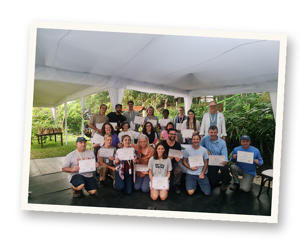
More than $72,000
in full scholarships in June alone, plus around $250,000 in partial scholarships.
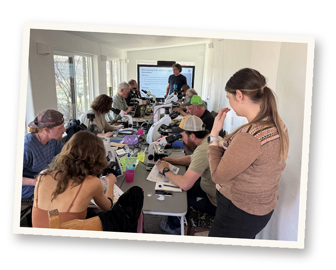
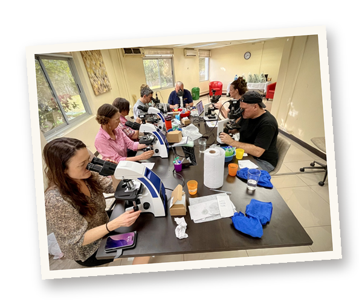
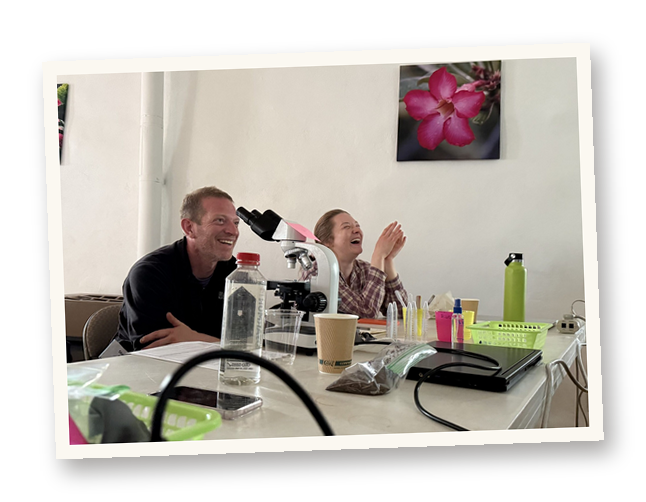
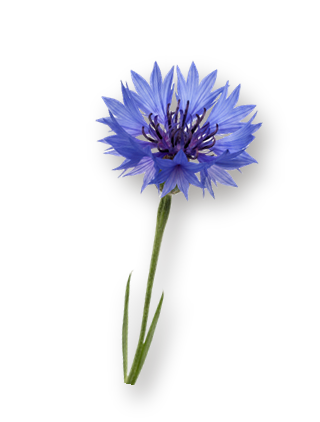
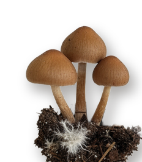
35
live events, with guests like Vandana Shiva, David Holmgren and Mary Cole.
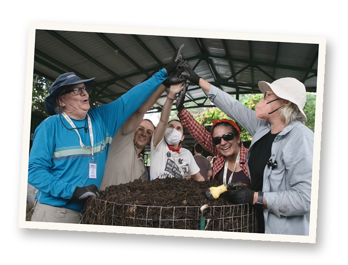
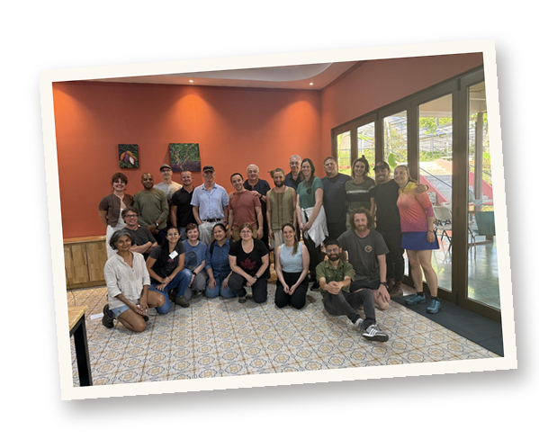
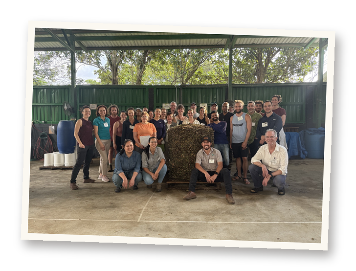
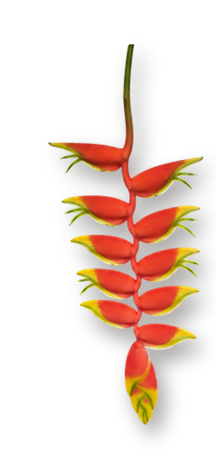
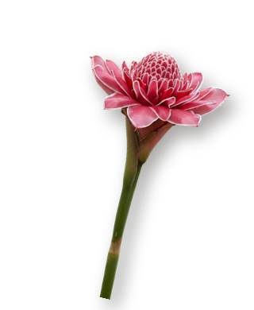
Our first course in Spanish.
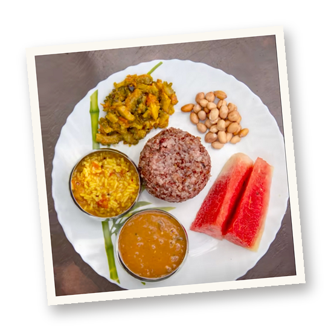
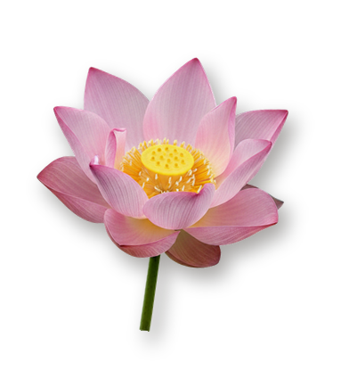
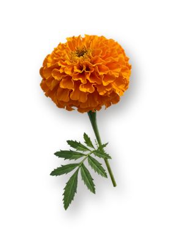
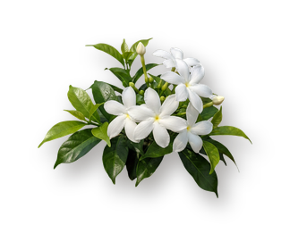
Our first workshop in Asia!
Hosted at the Save Soil Farm in Coimbatore India.
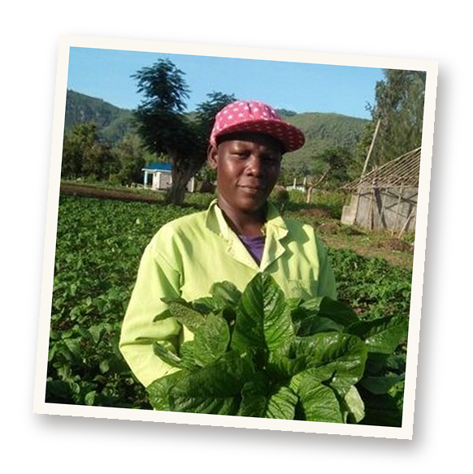
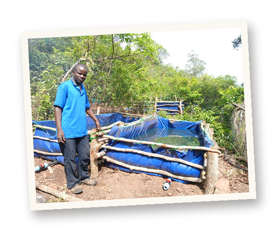
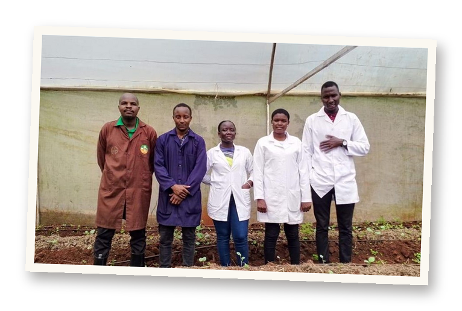
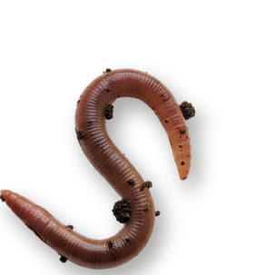
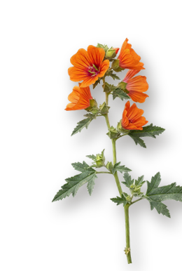
Foundation courses that no longer expire, weekly office hours, and every support message answered within 48 hours.
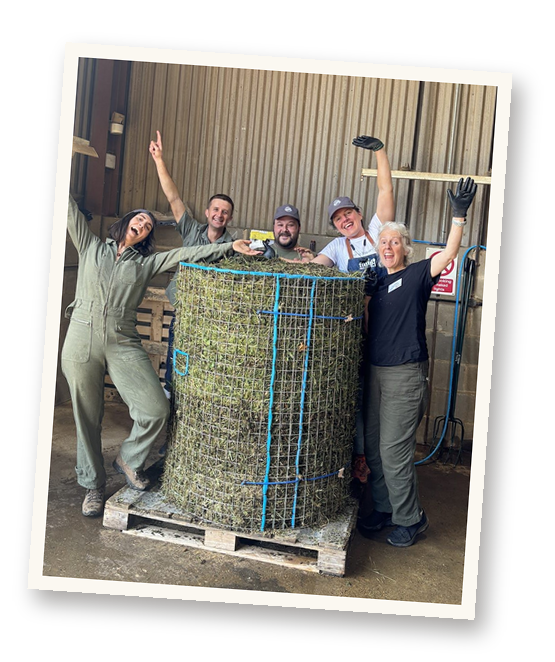
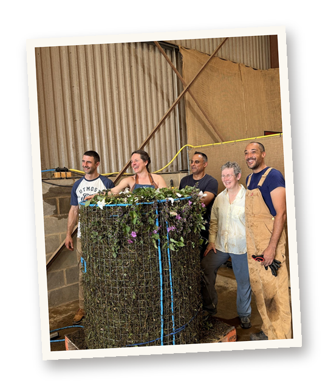
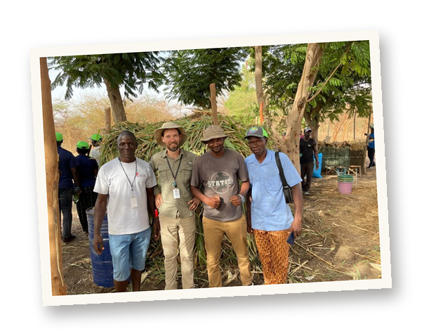
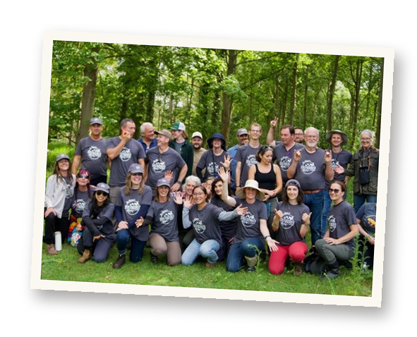
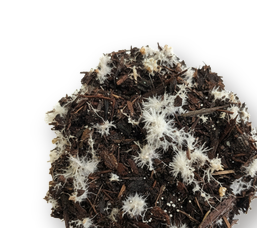
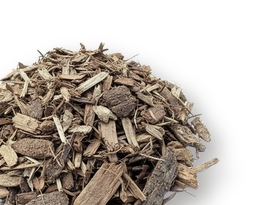
Launched our Compost Intensive Course, the first in a series of online group programs.
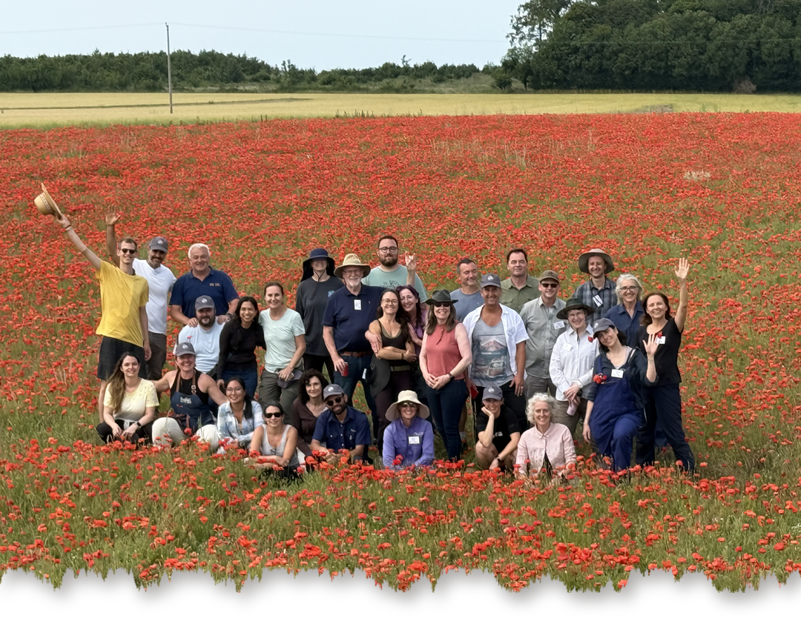
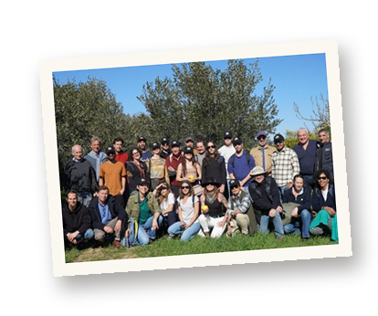
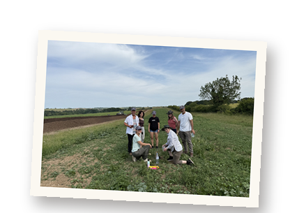
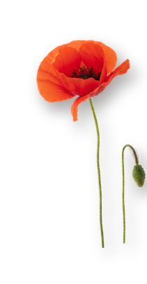
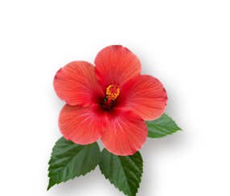
Thank you for growing with us. Here's to year two. 💚